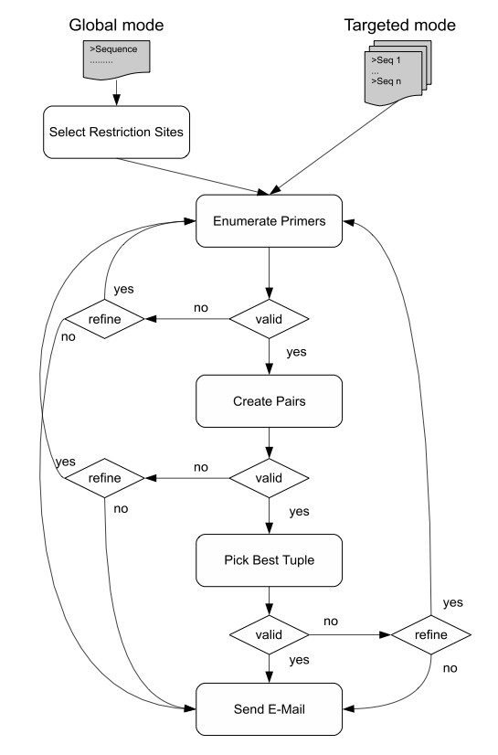

Job ID Optional reference parameter, that you can assign for this job.
Sequence The sequence(s) on which you want to design primers. Each sequence has to be plain DNA sequence in FASTA format WITHOUT any ambiguous characters! a. For global search mode, only one FASTA sequence must be provided! b. For targeted search mode, there must be one sequence for each primer pair to be generated. These sequences must be provided as Multi-Fasta sequence in 'targeted mode'.
Operation Mode The operation mode of the primer design program: a. Global Mode: The desired number of primer pairs are picked from one FASTA sequence containing at least one restriction site for the candidate enzyme for each primer pair to be picked. b. Targeted Mode: One primer pair is picked for each FASTA sequence. Each FASTA sequence must contain at least one restriction site for the candidate enzyme. Primer Design Workflow

Target Organism The target organism used to scan for primer misprimings.
Number of Primer Pairs The number of primer pairs to be designed. Each primer pair consists of an upstream primer, a downstream primer and (optionally) a hybridization probe located in between the two primers on the 5 prime side of the restriction site.
Restriction Enzyme The restriction enzyme used to create restriction fragments. Minimum Size: Minimum length of an acceptable restriction fragment generated by the selected enzyme. Maximum Size: Maximum length of an acceptable restriction fragment generated by the selected enzyme.
Include TaqMan Probes? Indicator for including the fluorescent TaqMan probes, in order to create the optimal primer pair set.
E-mail Address Recipient's VALID e-mail address, where results should be sent.
Primer Properties Minimum Primer Length: Minimum length of a primer. Optimum Primer Length: Optimum length of a primer. Maximum Primer Length: Maximum length of a primer. Minimum Primer TM: Minimum melting temperature of an acceptable primer. Optimum Primer TM: Optimum melting temperature of an acceptable primer. Maximum Primer TM: Maximum melting temperature of an acceptable primer. Minimum Primer GC: Minimum GC content of an acceptable primer. Optimum Primer GC: Optimum GC content of an acceptable primer. Maximum Primer GC: Maximum GC content of an acceptable primer. Maximum Primer Self Alignment Score: Maximum alignment score of an acceptable primer with itself. Maximum Primer Self End Alignment Score: Maximum alignment score of an acceptable primer with itself restricted to the last five basepairs of the three prime ends. Maximum Primer Pair Alignment Score: Maximum alignment score between acceptable forward and reverse primer pairs. Maximum Primer Pair End Alignment Score: Maximum alignment score between acceptable forward and reverse primer pairs restricted to the last five basepairs of the three prime ends. Maximum Primer TM Difference: The maximum difference between the melting temperatures of the forward and the reverse primer.
Probe Properties Minimum Probe Length: Minimum length of an acceptable hybridization probe. Optimum Probe Length: Optimum length of an acceptable hybridization probe. Maximum Probe Length: Maximum length of an acceptable hybridization probe. Minimum Probe TM: Minimum melting temperature of an acceptable hybridization probe. Optimum Probe TM: Optimum melting temperature of an acceptable hybridization probe. Maximum Probe TM: Maximum melting temperature of an acceptable hybridization probe. Minimum Probe GC: Minimum GC content of an acceptable hybridization probe. Optimum Probe GC: Optimum GC content of an acceptable hybridization probe. Maximum Probe GC: Maximum GC content of an acceptable hybridization probe. Maximum Probe Self Alignment Score: Maximum self alignment score of an acceptable hybridization probe with itself. Maximum Probe Self End Alignment Score: Maximum self alignment score of an acceptable hybridization probe with itself restricted to the last five basepairs of the three prime end. Maximum Probe Pair Alignment Score: Maximum pair alignment score of an acceptable hybridization probe to the forward & reverse primers. Maximum Probe Pair End Alignment Score: Maximum pair alignment score of an acceptable hybridization probe to the forward & reverse primers restricted to the last five basepairs of the three prime ends. Minimum Probe TM Difference: Minimum difference in melting temperature between the forward & reverse primer and an acceptable hybridization probe.
Amplicon Properties Minimum Amplicon Length: Minimum length of an acceptable amplicon. Optimum Amplicon Length: Optimum length of an acceptable amplicon. Maximum Amplicon Length: Maximum length of an acceptable amplicon. Safe FP Amplicon Length: The length of an acceptable false positive amplicon. Primers are scanned for misprimings in the target organism. A mispriming is supposed to only affect the experiment if an amplicon can be generated that is below a size which can be easily detected and discerned from the true positive amplicon.
ΔTM Weight: Score weight for the differences in melting temperatures. ΔGC Weight: Score weight for the differences in GC content. ΔLength Weight: Score weight for the differences in primer length. ΔDistance to RSS Weight: Score weight for the differences in distance to the restiction site. ΔSelf Alignment Weight: Score weight for the differences in self alignment values to the optimum value 0. ΔSelf End Alignment Weight: Score weight for the differences in self end alignment values to the optimum value 0. ΔPair Alignment Weight: Score weight for the differences in pair alignment values to the optimum value 0. ΔPair End Alignment Weight: Score weight for the differences in pair end alignment values to the optimum value 0. False Positive Weight: Score weight for the occurrence of false positives.
Reference: Sebastian Fröhler and Christoph Dieterich: 3PD: Rapid design of optimal primers for chromosome conformation capture assays. BMC Genomics 2009, 10:635
© Christoph Dieterich, Max Planck Institute for Biology of Ageing (2014)